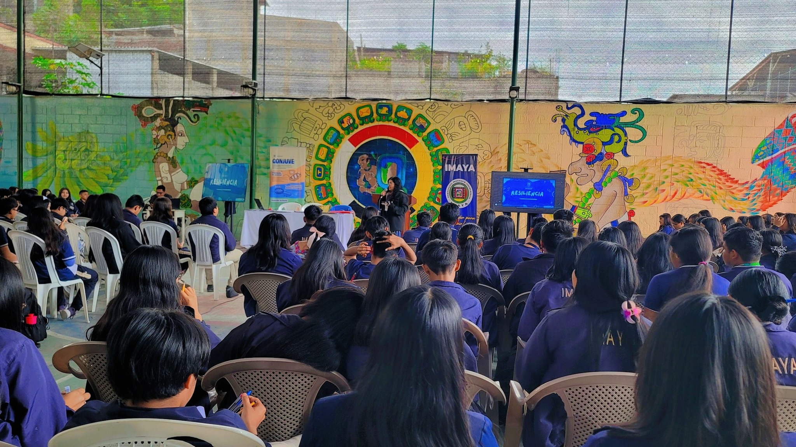
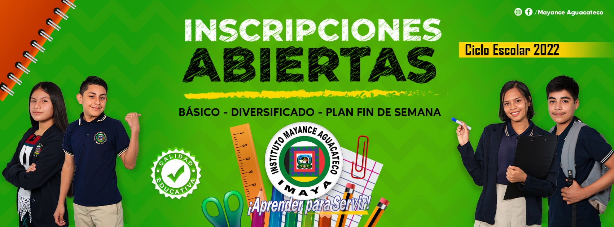
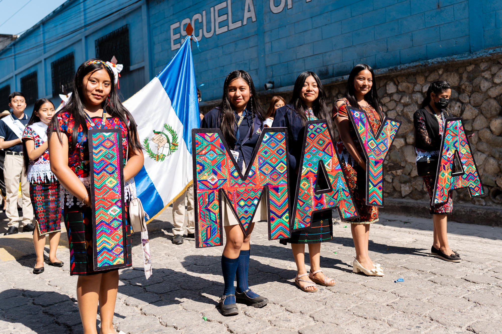
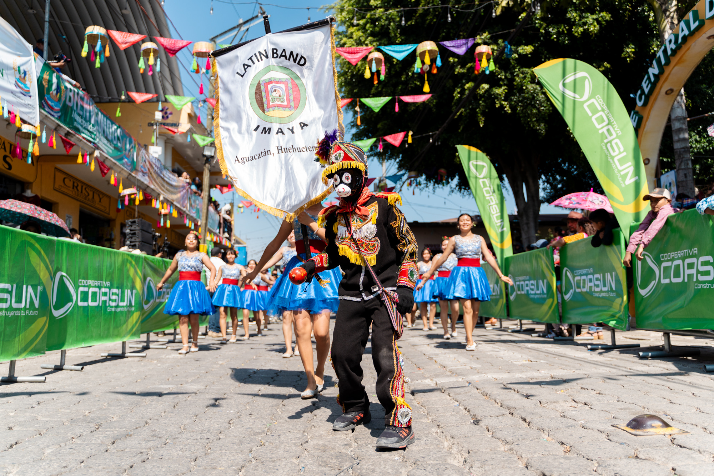
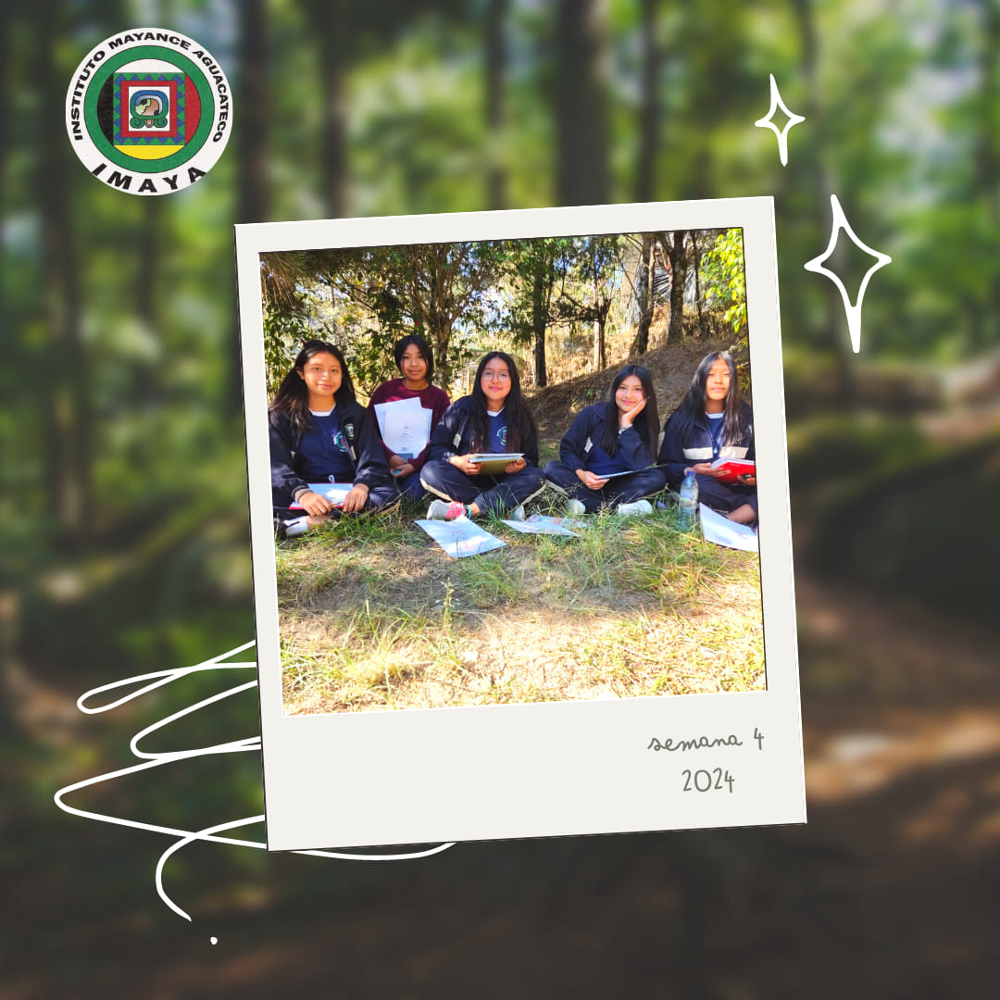
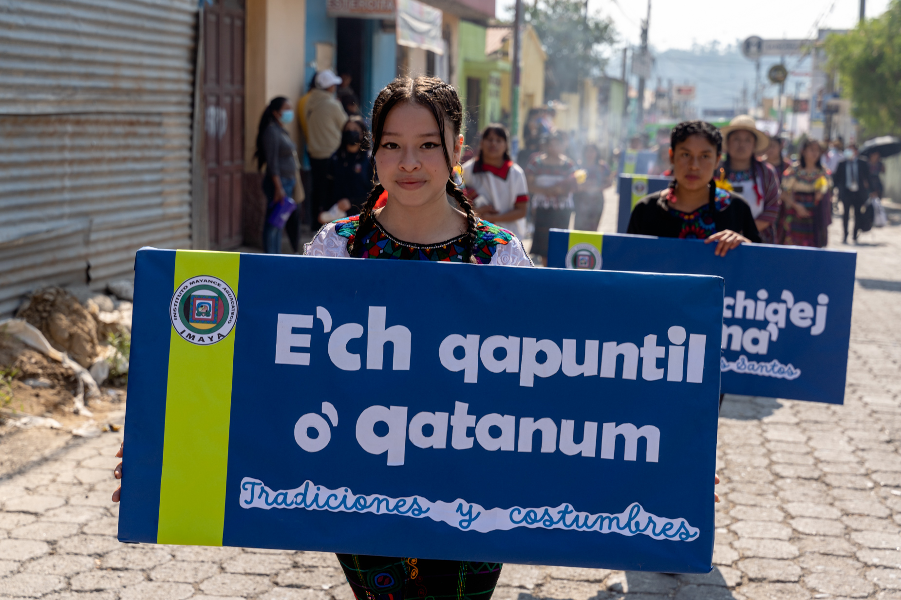

Servicios del Instituto Mayance Aguacateco
- Preinscripciones abiertas para el ciclo escolar 2025
- ¡Querida comunidad aguacateca!
El Instituto Mayance Aguacateco les informa con alegría que ya están abiertas las preinscripciones para el próximo ciclo
6 Nuestro compromiso es brindar una educación gratuita, intercultural y de calidad, fortaleciendo la identidad y el desarrollo de nuestra juventud.
- ¡✅ Beneficios para nuestros estudiantes
- - Sin pago de inscripción
- - Sin cuotas mensuales
- - Alimentación escolar gratuita
- - Entrega de útiles escolares sin costo
- - Educación bilingüe intercultural con enfoque en la cosmovisión maya
- 📚 Niveles y carreras disponibles
- 🧠 Ciclo Básico
- primero Básico
- segundo Básico
- tercero Básico
- Siclo Diversificado
- Magisterio en Educación Primaria Bilingüe Intercultural:Formación de docentes con dominio del español y lengua maya, integrando valores culturales y pedagógicos para enseñar en comunidades interculturales.
- Perito contador con orientación en computación:Capacitación en contabilidad, finanzas, auditoría y administración de empresas, ideal para trabajar en instituciones públicas o privadas.
- Perito en Mercadotecnia:Desarrollo de habilidades en publicidad, ventas, investigación de mercado y gestión comercial, con enfoque en emprendimiento local.
- Bachillerato en Ciencias y Letras:Formación académica integral en ciencias naturales, sociales y humanidades, orientada a continuar estudios universitarios.
- Secretariado Bilingüe:Preparación en administración, redacción, atención al cliente y manejo de idiomas (español e inglés), ideal para oficinas modernas y empresas.
- 🕒 Horarios de atención
- Mañana: 8:00 a.m. – 12:00 p.m.
- Tarde: 2:00 p.m. – 5:00 p.m.
- 📍 Ubicación
- 4ª Calle 3-35, Zona 3, Aguacatán, Huehuetenango
- 📞 Teléfono: 7766 0002
- 🌐 Sitio web: www.imaya.edu.gt
- 📘 Facebook: Instituto Mayance Aguacateco
- 📌 ¿No tienes todos tus documentos aún? ¡No te preocupes! Puedes realizar tu preinscripción provisional para asegurar tu espacio mientras completas tu papelería.
- ¡Ven y forma parte de una educación que respeta tus raíces, impulsa tu futuro y fortalece tu comunidad! Instituto Mayance Aguacateco: más de 34 años formando líderes con identidad.






